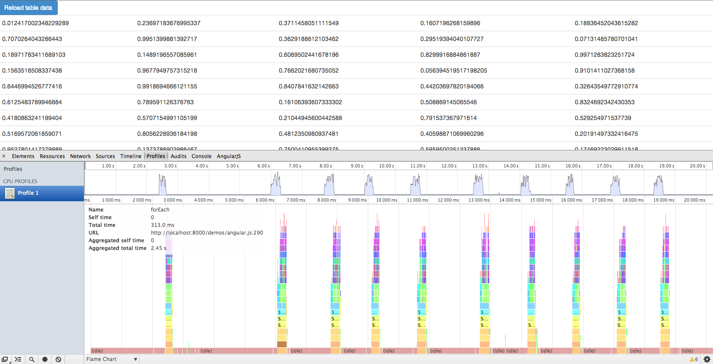
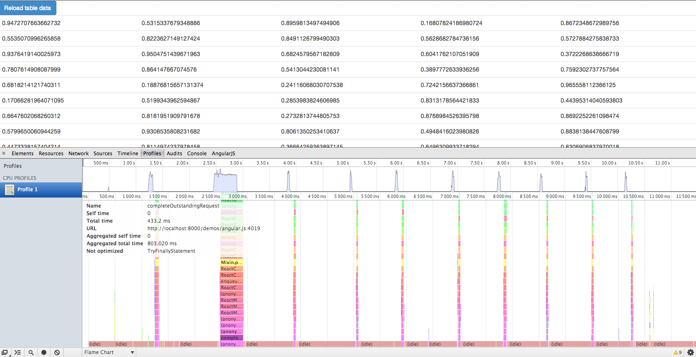

bower install ngReactA highly performant ng-repeat is like Angular's holy grail. Many people are looking for it and a few have rolled their own case-specific solutions with pretty impressive performance gains (blog.scalyr.com/2013/10/31/angularjs-1200ms-to-35ms/). I thought I might add to the noise for my specific use case and an approach I haven't seen yet.
At HasOffers, we have a need for a very basic ng-repeat. We don't need animations or watchers on individual rows; the only thing we really need is an ng-click, which is enough to dissuade us from writing a directive that renders static HTML every time the data changes.
Facebook's React framework came out a few months ago and their docs say it is meant to be used on top of other frameworks. When I looked around, I saw React being used as the view component of Backbone, but I hadn't seen a connection made between React and Angular, besides this Quora post (http://www.quora.com/Pete-Hunt/Posts/Facebooks-React-vs-AngularJS-A-Closer-Look) that explained that it was completely possible to use the two in conjunction. (By the way, if you are familiar with React internals, I would love to talk with you more.)
Hence, the idea - write an ng-repeat directive in Angular that does all rendering via React. I implemented what I needed for my proof of concept, which is the support of ng-bind and ng-click (and the retaining of class and id attributes).
Let's take a simple ng-repeat example first, written in pure Angular. This could probably get a lot better using bindonce or track-by, but that's another blog post. The HTML will be like this:
<table class="table">
<tbody>
<tr ng-repeat="row in data">
<td>{{row.0}}</td>
<td>{{row.1}}</td>
<td>{{row.2}}</td>
<td>{{row.3}}</td>
<td>{{row.4}}</td>
</tr>
</tbody>
</table>
and the controller logic will be like this, that fills the data array with 500 objects; each object with five keys holding random numbers:
$scope.data = [];
for(var i = 0; i < 500; ++i) {
$scope.data[i] = {};
for(var j = 0; j < 5; ++j) {
$scope.data[i][j] = Math.random();
}
}
Rendering this takes 2.45 seconds for 10 iterations, hovering between 250 and 315 milliseconds for each data reload. The initial load is presumably the fastest because there are no nodes to delete - everything is new:
I implemented two solutions via React, both initiated, called, and maintained from respective Angular directives. The first is called ngReactComponent, and allows you to write your React component explicitly. Your HTML would look like this:
<table class="table" ng-react-component="Repeater" data="data"></table>
Your controller would be the same as above, and your React component would look something like this in JSX:
/** @jsx React.DOM */
window.Repeater = React.createClass({
render: function() {
var scope = this.props.scope;
var rows = _.map(scope.data, function(datum) {
var clickHandler = scope.$apply.bind(
scope,
scope.clickHandler.bind(null, datum)
);
return (
<tr onClick={clickHandler}>
<td>{datum['0']}</td>
<td>{datum['1']}</td>
<td>{datum['2']}</td>
<td>{datum['3']}</td>
<td>{datum['4']}</td>
</tr>
);
});
return (
<tbody>
{rows}
</tbody>
);
}
});
Rendering this takes 803ms for 10 iterations, hovering around 35 and 55ms for each data reload (that's 67% faster). You'll notice that the first load takes a little longer than successive loads, and the second load REALLY struggles - here, it's 433ms, which is more than half of the total time!
The second way I came up with using React is called ngReactRepeat and it uses transclusion so that you don't have to explicitly declare your React Component. You just attach the directive on and it creates React components out of your markup. So your HTML still looks basically the same as the first example in pure Angular:
<table class="table">
<tbody>
<tr ng-react-repeat="row in data" ng-click="clickHandler(row)">
<td ng-bind="row.0"></td>
<td ng-bind="row.1"></td>
<td ng-bind="row.2"></td>
<td ng-bind="row.3"></td>
<td ng-bind="row.4"></td>
</tr>
</tbody>
</table>
Rendering this takes… 13.4s for 10 iterations, around 1.25s for each data reload. Ouch. That's almost 450% slower. I'm not sure if I'm doing something wrong and losing the React magic, but this is unmistakably TERRIBLE:
Let's go back to that first solution, though - it's actually pretty nifty! If we can figure out if that second reload can be reduced, we'd be looking at a pretty solid solution. ngReactComponent is written so that it is a bit abstract and could potentially be used as the entry point for any React component, but I wrote it specifically with ng-repeat in mind, so it might not be the most generalized.
If you made it this far, thanks for reading. I do appreciate it! If you have an understanding of React, I'd love to hear your thoughts and explanations, and to see if we can get that react-transclude version any better.
{kind=link}
{kind=link}